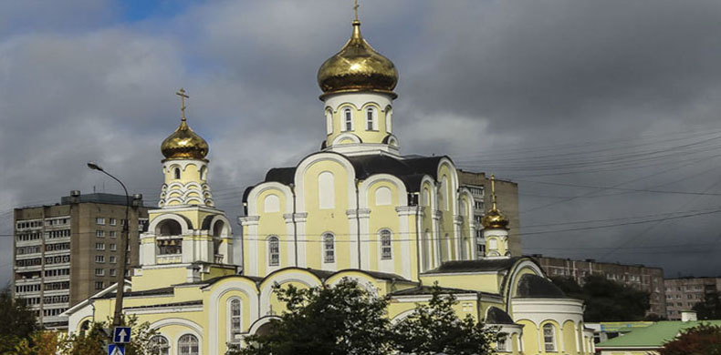
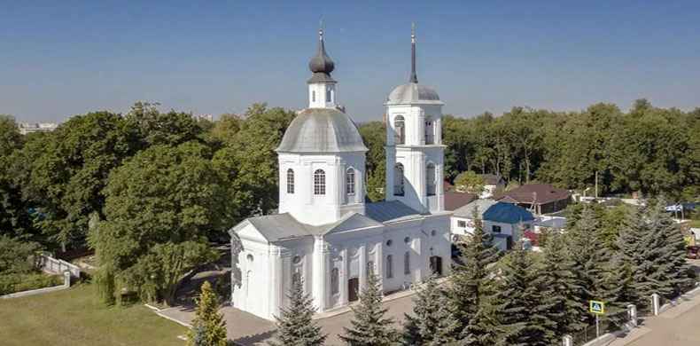
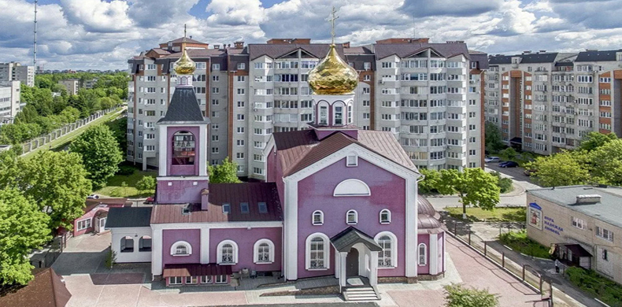
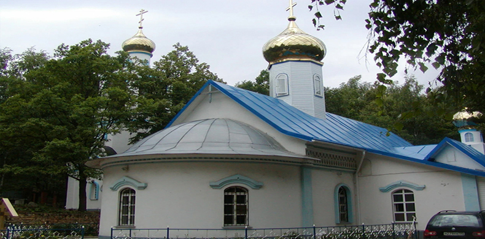
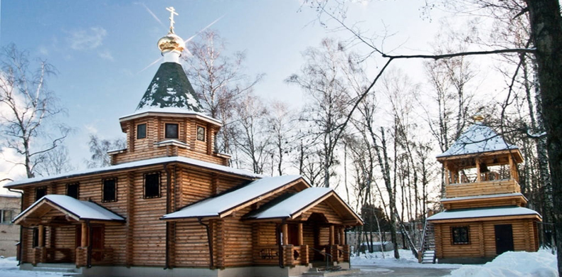
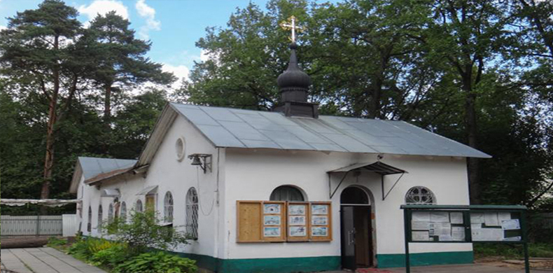
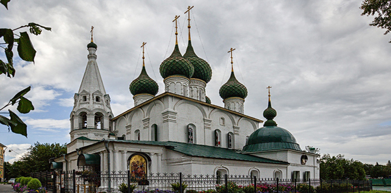
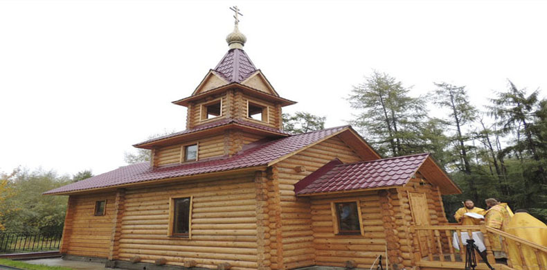
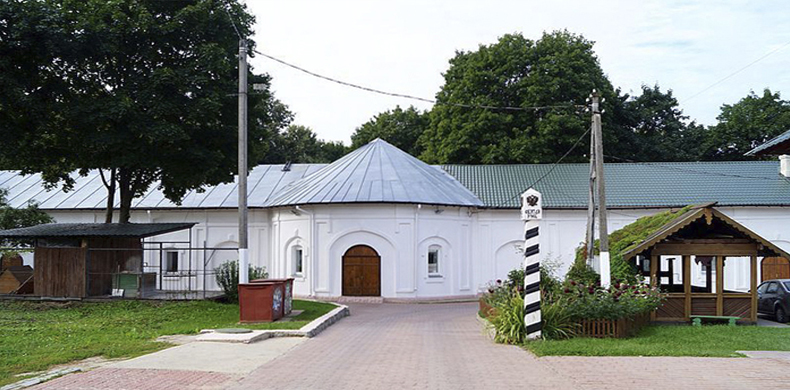

Храм в честь Рождества Христова



Храм приходской, имеет четыре престола: центральный престол в честь Рождества Христова.
Северный придел – в честь святителя Николая, архиепископа Мир Ликийских чудотворца.
Южный придел в честь иконы Божией Матери «Державная».
Престол нижнего придела – в честь св. Иоанна Предтечи, Крестителя Господня.
Все престолы, кроме нижнего в крестильном храме в честь св. Иоанна Предтечи, освящены архиерейским чином митрополитом Калужским и Боровским Климентом в сослужении архиепископа Людиновского Георгия 15 марта 2009 года.
Исторические сведения:
Приход вновь созданный. В 2012 году отметил 10 лет.
В 1991 г. обнинские прихожане выдвинули инициативу строительства в центре города соборной церкви. Проект был осуществлен городским архитектором М.М.Белоусовым.
1998 г.Весной был установлен памятный креста в сквере на месте будущего строительства храма. В мае начались строительные работы. В декабре был завершен нулевой цикл.
29.06. – освящение строительства Святейшим Патриархом Московским и всея Руси Алексием II во время официального визита на Калужскую землю по случаю празднования 200-летия учреждения Калужской епархии.
Митрополит Калужский и Боровский Климент в сослужении с архиепископом Людиновским Георгием и собором духовенства совершил освящение трех престолов храма: центрального престола в честь Рождества Христова, престола северного придела в честь свт. Николая Мир-Ликийского и престола южного придела в честь иконы Божией Матери «Державная».
Современная жизнь прихода:
В храме регулярно отправляются богослужения суточного круга.
При храме действует Духовно-просветительский Центр.
Клирики храма принимают активное участие в межприходских и городских мероприятиях. Налажена и хорошо ведется социальная работа Проводится активная миссионерская и просветительская работа с горожанами.
Расписание богослужений храма Рождества Христова:
- Начало Божественной Литургии в 9:00;
- в воскресные и праздничные дни две Литургии: в 7:00 и 9:30.
- В 17:00 Вечернее богослужение.
- Начало исповеди в 16:45.
Божественная Литургия служится каждый день.
Адрес:
г. Обнинск, ул. Энгельса д. 12
Телефон:
8 (915) 891-54-83
Сайт:
http://hramrh.ru/Храм в честь свв. блгв. кнн. Бориса и Глеба


Престол освящен в честь св. Бориса и Глеба священническим чином прот. Вячеславом Полосиным в 1988 году. Второй антиминс получен в 1999 году, в 2000 году по благословению Его высокопреосвященства митр. Климента передан прот. Александру Эггерсу для совершения богослужений в с. Кудиново.
Исторические сведения:
История храма св. Бориса и Глеба связана с историей самого села Белкино Первое письменное упоминание о с. Белкино относится к 1589 году.
В это время построены каменная церковь, трехэтажный барский дом с флигелями
Современная жизнь прихода:
Богослужения совершаются еженедельно по субботам воскресным дням и праздникам. При храме действует воскресная школа, библиотека, хорошо развита паломническая служба и молодежное движение. Много внимание уделено социальному направлению.
Расписание богослужений храма Святых Бориса и Глеба:
Богослужения в храме совершаются еженедельно:
- Среда - 18.оо вечерня
- Пятница - 18.оо вечерня
- Суббота - 8.зо панихида, Литургия, 18.оо всенощное бдение
- Воскресенье 8.зо молебен, Литургия.
Кроме того богослужения совершаются в великие праздники, дни памяти почитаемых святых. Накануне – всенощное бдение, в день праздника –Литургия.
Адрес:
г. Обнинск, ул. Энгельса д. 12
Телефон:
8 (910) 707-85-72
Сайт:
http://belkino.suХрам Веры Надежды Любови и матери их Софии



При ДПЦ «Вера, Надежда, Любовь» действуют два храма: в честь святых мучениц Веры Надежды Любови и матери их Софии и в честь иконы Божьей Матери именуемой Достойно есть.
Престолы освящены иерейским чином.
Исторические сведения:
Обнинский духовно-просветительский Центр (Миссия) «Вера, Надежда, Любовь»- местная православная религиозная организация-учреждение Калужской епархии Русской Православной Церкви (Московский патриархат) образован в 1997 году.
Но сам Центр располагается в бывшем солдатском клубе и возведен новый, типовой храм, что является следствием роста прихода, а значит, подтверждает правильность выбора направления деятельности Центра.
Действуют два храма. Богослужения совершаются ежедневно.
Современная жизнь прихода:
Духовно Просветительский Центр все свои силы направляет на духовно-нравственное возрождение нашего народа на основе православных традиций. С этой целью разработаны различные методические подходы по всем направлениям, которые могли бы реализовать эти цели. Проводятся конференции, чтения, лекции, беседы, посвященные современным проблемам общества, действует две воскресные школы, изостудия, студия резьбы по дереву, проводятся фестивали «Рождественская звезда», «Фестиваль православного Искусства», кинофестиваль «Встреча» и др. Совершаются паломнические поездки, через участие в которых прихожане приобщаются к историческим корням своих предков. Идет работа и со средствами массовой информации. Центр окормляет и сотрудничает с различными светскими учебными учреждениями.
Расписание богослужений храма Веры Надежды Любови и матери их Софии:
Богослужения совершаются ЕЖЕДНЕВНО :
- Начало вечернего богослужения в 17-00;
- утреннего в 7-30;
- По субботам в 11.00 молебен для благополучного течения беременности служит иерей Евгений Кандыбин.
- В воскресенье и праздничные дни совершается две Божественные Литургии в 6-30 и 9-30;
- в 18-00 молебное пение с акафистом блаженной Матроне Московской;
- Среда в 18-00 совершается молебное пение с акафистом Божьей Матери;
Дежурство в храме круглосуточно (все дежурные окончили общегородскую богословскую школы и продолжают обучаться в взрослой воскресной школы при Центре), дежурный священник по будням ежедневно с 9-00 до 17-00. В обязанности, возлагаемые на дежурного священника, входит совершение треб и просветительские беседы с прихожанами.
Еженедельно,
Адрес:
г. Обнинск, ул. Любого, 5-А
Телефон:
(48439) 6-48-99
Сайт:
https://vera-obninsk.ru/Храм в честь Святителя Тихона


Приход состоит из храма в честь Святителя Тихона, Патриарха Московского и Всероссийского, освящённого в 1992 году священническим чином и придела в честь Благовещения Пресвятой Богородицы, освящённого архиерейским чином 1 декабря 1996 года Архиепископом Калужским и Боровским Климентом.
Исторические сведения:
История храма Святителя Тихона, Патриарха Московского и Всероссийского началась с того момента, когда по благословению Митрополита Калужского и Боровского Климента, была зарегистрирована новая православная община, получившая название в честь иконы Пресвятой Богородицы Державная. 15 сентября 1991 года был заложен закладной камень в основание будущего храма, который по благословению владыки Климента был освящён в честь Святителя Тихона, патриарха Московского и Всероссийского. С весны 1992 года в храме начались регулярные богослужения. В 1994 году был заложен новый предел в честь Благовещения Пресвятой Богородицы, который был освящен Архиепископом Калужским и Боровским Климентом 1 декабря 1996 года.
Современная жизнь прихода:
За годы существования приход рос, развивался и благоустраивался. Появились новые строения (дом притча; пристройки: ризница, бухгалтерия, церковная лавка; колокольня; первая в городе крестильня, где появилась возможность совершать Таинство Крещения взрослых с полным погружением). Храм является одним из духовных центров города Обнинска, постоянными прихожанами являются как минимум около 150 человек. Также его посещают многочисленные жители города и окрестностей. На приходе идет активная приходская жизнь. Прихожане старались учавствовать во всех проводимых в городе и епархии межприходских мероприятиях.
Расписание богослужений храма Святителя Тихона:
- Богослужения совершаются суббота, воскресенье, в великие праздники, дни памяти почитаемых святых. Накануне – всенощное бдение, в день праздника –Литургия.
- Утренние богослужения в храме в основном начинаются в 8.50, реже в 7.00 и 8.00, вечерние в 17.00, летом в 18.00.
В храме круглосуточно дежурит сторож, который при необходимости связывается по мобильному телефону или по рации с настоятелем храма для решения неотложных вопросов.
Адрес:
249020 г. Обнинск, Кончаловские горы, кладбище
Телефон:
(484) 394-75-15, 8 (903) 109-35-66
Сайт:
http://shram-st.ru/Почта:
hram_st@obninsk.ru
Храм в честь святителя Луки


Храм в честь святителя Луки. Престол освящен архиерейским чином митрополитом Калужским и Боровским Климентом. Назначение храма – больничный.
Исторические сведения:
Закладной камень храма освящен архиерейским чином митрополитом Калужским и Боровским Климентом 8 января 2007 года.
Храм имеет один престол в честь святителя Луки, архиепископа Симферопольского и Крымского, который освящен 30 мая 2010 года митрополитом Калужским и Боровским Климентом.
Современная жизнь прихода:
Основой социального служения является духовное окормление больных.
Расписание богослужений храма Святителя Луки:
В храме богослужения совершаются каждые четверг, пятницу, субботу и воскресенье, а так же в особо значимые праздники, выпавшие на будний день:
- начало Божественной Литургии: – 9.00;
- вечернее богослужение – в 17.00;
- начало исповеди в 16.45;
- Четверг: Вечерня с акафистом святителю Луке архиепископу Симферопольскому и Крымскому.
- Пятница: Вечернее богослужение.
- Суббота: Божественная Литургия. Панихида. Всенощное бдение.
- Воскресенье: Божественная Литургия. Молебен с водосвятием.
В здании первой клиники Медицинского радиологического научного центра регулярно совершаются молебны о недужных для сотрудников и пациентов (МРНЦ).
Также в течение недели совершаются Таинства Покаяния, Причащения, Соборования.
Адрес:
располагается на территории Медицинского радиологического научного центра РАМН в г. Обнинске
Телефон:
(8484) 399-33-57
Сайт:
http://hramsvtluki.ruМолитвенный дом в честь св. равн. вел. кн. Владимира и вел. кн. Ольги


Молитвенный дом в честь св. равноап. вел. кн. Владимира и вел. кн. Ольги с приставным престолом. Престолы не освящены.
Исторические сведения:
В 1994 году настоятель Спасо-Преображенского храма из Спас-Загорья игумен Ростислав Колупаев обратился к городской администрации с просьбой передать Православной церкви небольшое здание игровых автоматов, стоящее в городском Парке культуры, для организации в нём храма. Передача состоялась 12 июня 1994 года. В тот же день священнослужители вместе с прихожанами расчистили помещение, привезли из храма Спас-Загорья распятие и иконы. Обустройство храма было завершено за несколько дней. Храм был освящён во имя равноапостольных князя Владимира и княгини Ольги, поскольку Обнинск получил статус города 24 июля — в день памяти равноапостольной княгини.
Этот храм стал первым на территории самого города. Он расположен недалеко от того места, где прежде находился Репинский погост с деревянной церковью св. Николая Чудотворца. Храм окормлялся священнослужителями из Спас-Загорья. Горожане жертвовали храму иконы, книги, посуду, церковную утварь. Первое богослужение состоялось 18 июня, на Троицу. Службы сопровождались пением церковного хора, в основном состоящего из молодёжи. В настоящее время храм является архиерейским подворьем. В храме служат два священника.
Современная жизнь прихода:
Богослужения совершаются еженедельно по субботам воскресным дням и праздникам. При храме действует воскресная школа. Идет подготовка проекта на строительство нового храма.
Расписание богослужений храма Святых Владимира и Ольги:
- пятница в 17:00 – вечернее богослужение;
- суббота в 09:00 – Божественная литургия, Панихида
- 17:00 – всенощное бдение;
- воскресенье в 07:00 – ранняя Божественная литургия;
- Четверг: Вечерня с акафистом святителю Луке архиепископу Симферопольскому и Крымскому,
- в 09:00 – поздняя Божественная литургия, Молебен.
Также богослужения совершаются в дни двунадесятых, великих, бденных, полиелейных, а также особо чтимых праздников, причем в дни двунадесятых и великих праздников совершаются две Божественных литургии.
Адрес:
г. Обнинск, пр. Ленина, 21-А
Телефон:
(48439) 6-46-52
Сайт:
http://domen.ruХрам в честь Преображения Господня


Главный престол освящен в честь праздника Преображения Господня, вероятно, в начале XVII века. Храм имеет три придела. Нижний и зимний – в честь Казанской иконы Божией Матери, освящен в 1696 году. Южный, Крестовоздвиженский придел, и северный, Покровский придел, освящены во второй половине XVIII века. В настоящее время в Казанском приделе невозможно совершать богослужения из-за повышенной влажности. После закрытия храма с 1937 по 1947 год главный престол и престолы в Крестовоздвиженском и Покровском приделах были освящены иерейским чином.
Исторические сведения:
Истоия храма ведется с 1614 года. К 90-м годам XVII века, храм принял современный облик. Он строился двухэтажным, с нижним теплым приделом в честь Казанской иконы Божией Матери. По освящению нижнего придела датируется и завершение постройки - 1696 год. Дошедший до нашего времени храм в архитектурном отношении представляет собой, по мнению специалистов, яркий образец национального стиля русского зодчества второй половины 17-го века. Характерными чертами традиционно русского стиля являются бесстолпная конструкция храма, пятиглавие, завершение свода закомарами, обрамление куполов кокошниками. Здание храма двухэтажное, верхний этаж – летняя Преображенская церковь с двумя пределами (Крестовоздвиженским и Покровским) – имеет два яруса окон, обрамлённых наличниками, состоящими из двух колонок, которые связаны сверху фигурной скобкой. Зимняя часть, храм Иконы Казанской Божьей Матери, возможно, наиболее древняя часть строения. Оригинально решена в конструкции храма шатровая колокольня: грани её восьмерика ориентированы по сторонам света. В 1937 г. храм был закрыт, и нижний предел использовался как склад и столовая. Только в 1947 году Совет по делам Русской Православной Церкви зарегистрировал общину и передал её здание храма, что и было отмечено в протоколе и договоре от 24.09.1947 г.
Современная жизнь прихода:
Первый послевоенный настоятель, архим. Никандр, оставил глубокий след в духовном облике Спас–Загорского Преображенского храма. После смерти архимандрита, прожившего без малого столетие (даты жизни 1876-1972), на приходе сменилось множество священников, имена которых ещё помнят старейшие прихожане Храма. Среди них: о. Николай, о. Михаил, о. Вениамин, о. Александр, о. Сергий, о. Иоанн, о. Валентин, архим. Донат, архим. Серафим, прот. Борис, прот. Николай Суходолов, прот. Андрей Куликов, иерей Алексий Поляков, игумен Ростислав (Колупаев) и нынешний настоятель храма с 1997 года – прот. Сергий Демьянов.
В 2002 году в г. Тутаеве Ярославской области был отлит подбор колоколов. 29 декабря при служении правящего архиерея, владыки Климента (Капалина), прошло торжественное освящение колоколов и к Пасхе 2003 года была полностью оборудована колокольня.
Заканчиваются работы по реставрации главного иконостаса храма силами темперного отдела Государственного научно-исследовательского института реставрации (ГосНИИР) и кафедры реставрации Православного Свято-Тихоновского Гуманитарного Университета (ПСТГУ).
С 1995 года регулярно проводятся духовные беседы со взрослыми. Также действуют воскресная школа «Жаворонок» с. Спас-Загорье, детское творческое объединение «Радуга» г. Обнинск.
Расписание богослужений храма Преображения Господня:
Богослужения в храме совершаются по воскресным и праздничным дням согласно расписания богослужений на текущий месяц.
- по будням в 18-00;
- по выходным дням – в 17-00;
- Начало Божественной Литургии – в 9-00
В дни, когда не проводятся богослужения в храме организовано дежурство.
Адрес:
г. Обнинск,
Телефон:
Сайт:
http://www.hrampg.ruХрам в честь святого великомученика и целителя Пантелеймона


Престол храма освящен архиерейским чином митрополитом Калужским и Боровским Климентом. в 2012году 13 октября. Назначение храма – больничный.
Исторические сведения:
Приход вновь созданный. Больничный храм находится на территории больничного городка ФГУЗ ЦМСЧ № 8. г.
В 2007 г. приход получил разрешение на пользование земельным участком для строительства больничного храма В настоящее время завершено строительство основного здания храма и колокольни, изготовлены, подняты и установлены колокола.
Современная жизнь прихода:
Храм в честь св. вмч. и целителя Пантелеимона расположен на территории медико-санитарного учреждения ЦМСЧ № 8 г. Обнинска и является больничным храмом. Основой социального служения является духовное окормление больных.
Расписание богослужений храма святого великомученика и целителя Пантелеймона:
Расписание богослужений суббота вечер, воскресенье, в великие праздники, дни памяти почитаемых святых. Накануне – всенощное бдение, в день праздника – Литургия.
Расписание дежурств в храме в дни, когда богослужения не совершаются:
- ежедневно с 9-00 до 18-00;
- выходной – понедельник
Расписание дежурств священника:
- вторник-воскресенье с 10-00 до 18-00;
кроме часов совершения богослужений, праздничных дней и времени отсутствия по вопросам, связанным с совершением треб вне храма и организацией строительных работ.
Адрес:
Территория медицинского городка
Телефон:
+7 (484) 395-89-05
Сайт:
http://www.domen.ruХрам в честь Спаса Нерукотворного (при казачьей общине «Спас»)


Домовой храм в честь Спаса Нерукотворного при казачьей общине «Спас».
Престол освящен иерейским чином.
Исторические сведения:
Центр «Спас» располагается на территории бывшей риги усадьбы Белкино-Бутурлиных. Основные направления и формы работы: профилактика употреблений наркотических средств и алкоголя, правонарушений среди несовершеннолетних, в том числе, в сфере наркопреступности, и допризывная подготовка молодежи, а так же социальная реабилитация людей, страдающих наркотической и алкогольной зависимостью.
Современная жизнь прихода:
В общинном храме в честь Спаса Нерукотворного проводятся регулярные Богослужения иереем Павлом (Кузнецовым). Участвуют взрослые (общинники и члены их семей, друзья и соратники общины, лица, проходящие реабилитацию и социализацию в ОЦП «Спас») и дети, занимающиеся в общине. Общее количество участников – 50 чел., причастников -50 чел.
Расписание богослужений храма в честь Спаса Нерукотворного:
Расписание дежурств в храме в дни, когда богослужения не совершаются:
- ежедневно с 9-00 до 18-00;
- выходной – понедельник
Расписание дежурств священника:
- вторник-воскресенье с 10-00 до 18-00;
кроме часов совершения богослужений, праздничных дней и времени отсутствия по вопросам, связанным с совершением треб вне храма и организацией строительных работ.
Адрес:
село Белкино, казачья община СПАС, рига
Телефон:
(48439) 486-86
Сайт:
http://www.mirspas.ru/Почта
info@mirspas.ru
Храм благоверных Петра и Февронии Муромских

По благословению митрополита Калужского и Боровского Климента в 2022 году началось строительство храма в честь благоверных Петра и Февронии Муромских в деревне Кабицино, Боровского района.
18 декабря 2022 года уже состоялось малое освящение этого храма.
По благословению митрополита Калужского и Боровского Климента освящение совершил епископ Тарусский Леонид, викарий Калужской епархии.
После совершения малого освящения в храме в честь святых князя Петра и княгини Февронии была впервые отслужена Божественная литургия.
На территории д. Кабицыно никогда не было храма. Потребность местных жителей иметь территориально доступный храм обусловило строительство храма. . Все строительные работы велись за счет частных пожертвований. После малого освящения община сможет приходить в храм для участия в богослужении и совместной молитвы.
Исторические сведения:
Современная жизнь прихода:
Расписание богослужений храма благоверных Петра и Февронии Муромских:
Адрес:
Калужская область, Боровский район, деревня Кабицыно, улица А.Карелина, 9
Телефон:
+7 (910) 607-35-79